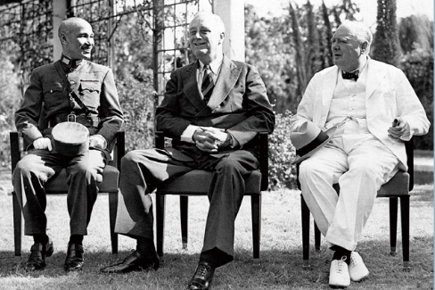
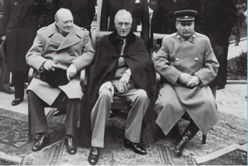
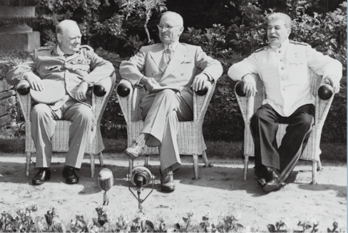

01
북만주한국 독립군+중국 호로군
주요 전투쌍성보사도하자대전자령
5
1930년대 이후 한국인들은 만주와 중국 관내에서 적극적인 항일 무장 투쟁 전개. 1940년대에는 독립에 대한 희망이 높아지며 독립 이후 국가의 모습 구상.
만주 사변(1931), 한·중 연합 작전, 사회주의 세력의 항일 유격 투쟁
한인 애국단의 의열 투쟁, 민족 혁명당 결성, 조선 의용대 창설
임시 정부 재정비, 한국광복군 창설, 국내외 건국 강령, 국제 사회의 한국 독립 약속
17
만주 사변(1931)과 만주국 수립으로 만주 일대가 사실상 일제의 점령 지역으로 변화. 중국 내 항일 감정이 높아지며 한국 독립군과 조선 혁명군이 각각 중국인 부대와 연합하여 항일 전쟁 전개.
일제의 만주 장악 → 중국군의 활동 위축, 독립군의 활동 어려움
한국 독립군(지청천 등)관내로 이동하여 임시 정부에 합류, 한국광복군 창설에 기여
조선 혁명군 일부양세봉 전사(1934) 이후 세력 약화 → 1930년 후반 동북 인민 혁명군 가담
17
만주 사변(1931) 이후 중국 공산당이 항일 무장 투쟁 주도. 만주의 한인 사회주의 세력도 항일 유격대를 조직하여 중국 사회주의 세력과 연합.
각지의 항일 유격대를 규합하고 중국 사회주의 세력과 연합하여 항일 무장 투쟁 전개
18
국민 대표회의 결렬 이후 재정난 등으로 임시 정부의 활동 위축. 만보산 사건(1931)으로 중국인의 반한 감정이 커져 독립운동 곤란. 김구가 임시 정부에 활기를 불어넣고자 한인 애국단 조직(1931).
일왕이 탄 마차에 수류탄 투척
일왕 처단에는 실패했으나 일제에 큰 충격
중국 신문의 사건 적극 보도 + 상하이 거주 일본인 습격 → 상하이 사변
일왕 생일 및 상하이 사변 승전 기념식에 폭탄 투척
일본군 장교와 여러 고위 관리 처단
18
만주 사변(1931) 이후 일제의 탄압으로 만주의 독립운동 단체 대부분이 중국 관내로 이동. 노선의 차이를 넘어 여러 독립운동 단체의 통합 노력.
김원봉의 의열단 계열이 당을 주도하자 조소앙·지청천 등 민족주의 계열 이탈.
한국 광복 운동 단체 연합회 결성.
조선 민족 전선 연맹 결성.
조선 민족 전선 연맹이 중국 국민당 정부의 지원으로 조선 의용대 창설. 중국 관내 최초의 한인 무장 부대로 정보 수집·포로 심문 등 후방 공작 전개. 다수 대원은 적극적인 항일 투쟁을 위해 화북으로 이동하여 ‘조선 의용대 화북 지대’ 결성(1941). 이동하지 않은 병력 → 김원봉의 지휘 아래 한국광복군에 합류(1942).
19
윤봉길 의거 이후 일제의 탄압 심화로 임시 정부가 상하이를 떠나 항저우 → 창사 → 광저우 → 충칭 이동. 정당·정부·군대 체제 정비.
김구·지청천·조소앙 등 중심
주석 중심, 김구 주석 선출
국민당의 지원과 간섭(~1944) : 행동 준승 9개항
조선 민족 혁명당 (김원봉) 임시 정부 참여
조선 의용대 병력 일부 한국광복군 합류
19
19
19
일제의 패망 기대가 커지며 각 세력이 통일 전선 형성에 노력, 독립 이후 세울 국가의 이념과 체계 구상.
1930년대 후반 세계적 연대(합작) 분위기 : 미국 + 소련, 제2차 국공 합작 → 국내외 항일 세력 연대 시도.
대한민국 임시 정부 · 조소앙의 삼균주의에 기초
김두봉 주석 · 군사 조직: 조선 의용군(1942)
여운형 주도 · 비밀 결사
19
제2차 세계 대전에서 승기를 잡은 연합국이 전쟁 수행과 전후 처리 문제를 논의하며 여러 차례 회담 개최, 한국의 독립 문제 논의.

미국·영국·중국 대표 참석. 한국의 독립 문제 최초 논의, ‘적당한 시기에 한국을 자유롭고 독립하게’ 할 것 명시(카이로 선언).

미국·영국·소련 대표 참석. 독일 분할 점령, 소련의 대일전 참전 비밀 결의, 자유 선거에 의한 정부 수립 등의 원칙 마련.

미국·영국·소련 대표 참석. 일본에 무조건 항복 요구, 카이로 선언의 한국 독립 재확인(포츠담 선언).
일본이 포츠담 선언을 거부하자 미국이 히로시마·나가사키에 원자 폭탄 투하, 소련의 대일전 참전(1945. 8. 9.). 일본의 무조건 항복으로 제2차 세계 대전 종결, 우리 민족 광복.
2-1
제2차 세계 대전 이후 미국과 소련을 중심으로 냉전 체제가 형성되는 가운데, 광복을 맞은 한반도는 38도선을 경계로 분할 점령되어 건국 준비와 좌우 대립 전개.
냉전 체제의 형성, 8·15 광복과 한반도 분할 점령, 조선 건국 준비 위원회 결성, 미소 군정의 실시, 모스크바 3국 외상 회의와 좌우 대립
미소 공동 위원회 개최, 좌우 합작 운동 전개, 한반도 문제 유엔 상정, 남북 협상, 단독 정부 수립을 둘러싼 갈등
5·10 총선거, 대한민국 수립 선포, 북한 정권 수립 준비와 북한 정부의 수립
친일파 청산을 위한 노력, 농지 개혁, 농지 개혁의 성과와 한계
01
제2차 세계 대전이 끝난 뒤 전범 처리와 전쟁 방지 노력이 이어지며 국제 연합 창설.
뉘른베르크 전범 재판, 도쿄 전범 재판(극동 국제 전범 재판).
대서양 헌장(1941)에서 국제 평화 기구 설립 구상. 샌프란시스코 회의에서 국제 연합 헌장 제정.
총회 및 여러 이사회, 산하 기구 설치. 안전 보장 이사회 5개 상임 이사국의 거부권 행사. 국제 분쟁 해결을 위한 무력 사용 가능(유엔군).
01
미국 중심의 자본주의 진영과 소련 중심의 사회주의 진영의 대립으로 냉전 체제 형성.
01
유럽에서 냉전 체제가 심화되자 동아시아에서는 군사적 충돌인 ‘열전’ 발생.
국공 내전(4년) 발생 → 중화 인민 공화국 탄생, 중화민국의 타이완 이동.
1차 인도차이나 전쟁(1948) → 남, 북 베트남 분단.
6·25 전쟁(한국 전쟁, 1950).
일본의 반공 거점 기지화. 샌프란시스코 강화 조약(1951) : 연합군의 일본 점령 종료와 일본의 국제 사회 복귀. 6·25 전쟁의 전쟁 특수로 일본의 경제적 성장.
01
(1) 광복의 역사적 의미 — 일본의 항복으로 맞이한 광복은 우리 민족 독립 운동의 결실이자 연합군 승리의 결과.
01
조선 건국 동맹에 안재홍 등 우익이 합류하여 조선 건국 준비 위원회(건준) 결성.
01
(2) 38도선 획정과 분할 점령 — 미소의 군사적 편의에 따라 한반도 분할 결정.
01
소련은 간접 통치, 미국은 직접 통치 방식으로 남북한에서 군정 실시.
01
모스크바 3국 외상 회의(1945. 12.)에서 미·영·소 3국 외상이 참여하여 한반도 문제 논의.
임시 민주 정부 수립을 지원할 미소 공동 위원회 설치
한반도에 임시 민주 정부 수립
미·영·중·소 4대국에 의한 신탁 통치 실시
신탁 통치 이후 독립 국가 수립
01
모스크바 3국 외상 회의 결정을 둘러싸고 좌우 대립 격화.
02
모스크바 3국 외상 회의 결정에 따라 제1차 미소 공동 위원회(1946. 3.) 개최, 임시 정부 수립을 위한 협의 대상을 두고 갈등.
02
제1차 미소 공동 위원회 결렬과 이승만의 정읍 발언 이후 중도파 중심의 좌우 합작 운동 전개.
02
제2차 미소 공동 위원회 결렬 후 미국이 한반도 문제를 유엔에 이관, 유엔 소총회에서 선거 가능한 지역의 총선거 결정.
02
김구와 김규식이 남북 협상(1948. 4.)을 추진했으나 통일 정부 수립은 실패.
02
5·10 총선거를 둘러싼 갈등 속에서 제주 4·3 사건과 여수·순천 10·19 사건 발생.
03
유엔 임시 위원단 감독하에 남한만 5·10 총선거를 실시하여 제헌 국회 구성, 헌법 공포. 대한민국 정부 수립을 공포(1948. 8. 15.)하여 미군정이 끝나고, 유엔이 한반도 유일의 합법 정부로 승인.
대한민국 임시 정부 법통 계승
민주 공화국 명시
대통령 중심제 채택 – 국회에서 선출(간선제)
03
해방 직후 건국 준비 위원회와 인민 위원회가 조직되고, 소련의 후원으로 김일성 세력이 권력 장악. 북한은 단독 정부 수립을 준비하여 조선 민주주의 인민 공화국(1948. 9. 9.)을 선포.
북한 각 지역에서 건국 준비 위원회 결성조만식 등 기독교 우익 중심
인민 위원회 조직좌익 + 조만식 등 기독교 우익 연합 (좌우 연합적 성격)
김일성 공식 등장
조만식 등 우익 신탁 통치 반대→ 우익 탄압 시작 (우익 다수 월남)
실질적 중앙 권력 기구 역할 · 김일성 등 좌익 권력 장악
소련의 적극적 후원
임시 헌법 초안 작성(1947. 12.)
조선 인민군 창설(1948. 2.)
실질적 정부 수립 준비04
제헌 국회가 반민족 행위 처벌법을 제정하여 친일파 청산을 시도했으나 반민특위 해산으로 실패.
04
해방 이후 농지 개혁은 시대적 과제, 정부 수립 후 농지 개혁법(1949. 6.) 제정.
소작료 3·7제 주장 → 미군정 소작료 3·1제 시행
무상 몰수·무상 분배
소작농·귀환 동포 대상, 전체 농지의 13.4%
농민 부담액 150%로 증액
04
농지 개혁으로 지주-소작제가 무너지고 자작농 체제가 성립했으나 한계도 뚜렷.
2-2
남북 정부 수립 이후 북한의 남침으로 6·25 전쟁이 일어나 인적·물적 피해와 함께 분단이 고착화되었고, 남북 모두 독재 체제가 강화된 가운데 전후 복구 사업 전개.
전쟁 직전 국내외 정세, 6·25 전쟁의 원인과 전개 과정, 정전 협정 체결, 6·25 전쟁의 피해와 국제적 영향
장기 집권을 위한 개헌, 반공주의와 독재 체제 강화, 전후 북한의 정치와 경제
전후 복구 노력과 미국의 원조, 전후 사회의 변화
05
남북한 단독 정부 수립 이후 군사적 대립이 심화되어 38선 부근의 충돌이 빈번해지고 북한은 전쟁 준비를 본격화.
05
북한이 소련·중국의 지원 약속을 받아 전쟁을 준비하는 가운데 미국의 대한 정책 변화로 북한이 기습 남침(1950. 6. 25.).
05
북한의 기습 남침으로 3일 만에 서울이 함락되고 정부는 대전·대구·부산으로 이동.
05
UN군의 참전으로 전쟁이 국제전으로 확대되고 인천 상륙 작전(1950. 9. 15.)으로 전세 역전.
05
국군과 UN군이 압록강까지 북진했으나 중공군의 참전(1950. 10. 19.)으로 후퇴하여 서울을 다시 내줌(1·4 후퇴).
05
서울 재탈환 후 전선이 38선 부근에서 교착되자 정전 협상이 시작되었으나 2년간 난항.
05
정전 협정 체결(1953. 7. 27.)로 3년 1개월 만에 전투가 멈추고 군사 분계선과 비무장 지대(DMZ) 설정.
05
6·25 전쟁은 남침 → UN군의 참전과 북진 → 중국군의 참전 → 전선의 교착과 정전 협정의 4단계로 전개. 지도와 함께 단계별로 정리.
05
6·25 전쟁으로 막대한 인적·물적 피해가 발생하고 이산 가족과 전쟁고아가 생겨남.
05
전선이 이동하는 가운데 수많은 민간인이 학살되어 남북 상호 적대감이 심화되고 분단 체제가 고착화.
05
6·25 전쟁은 미소의 냉전 체제를 심화시키고 남한·북한·일본의 정치·경제에 큰 영향.
06
이승만 정권은 국회에서 재선이 어려워지자 직선제 개헌을 추진하며 공안 정국을 조성.
06
자유당이 사사오입(반올림)의 논리로 부결된 개헌안을 통과시켜 대통령의 중임 제한을 철폐.
06
사사오입 개헌으로 이승만의 영구 집권 기반이 마련되자 야당은 통합을 시도했으나 실패, 제3대 정부통령 선거에서 조봉암이 약진.
06
조봉암의 약진에 위기를 느낀 이승만 정부가 진보당 사건(1958)과 국가 보안법 개정으로 반대 세력을 탄압.
06
김일성이 6·25 전쟁 도중부터 연안파·소련파·남로당파를 숙청하고 8월 종파 사건을 거쳐 1인 독재 체제를 완성.
07
이승만 정부는 미국의 원조와 귀속 재산 매각으로 재원을 마련하여 전후 복구 사업을 추진.
07
전쟁 이후 인구의 대규모 이동과 도시 문제, 여성의 사회 활동과 교육열 증가, 미국식 대중 문화의 유입 등 사회가 변화.
2-3
이승만 독재를 무너뜨린 4·19 혁명 이후 군사 정변과 유신 체제로 민주주의가 후퇴했으나, 5·18 민주화 운동과 6월 민주 항쟁을 거쳐 민주화를 이룩.
3·15 부정 선거와 4·19 혁명, 장면 정부의 출범과 한계
5·16 군사 정변, 한일 국교 정상화, 베트남 파병, 3선 개헌
국제 정세와 남북 관계의 변화, 유신 체제의 성립, 유신 반대 운동의 확산, 부마 민주 항쟁과 유신 체제의 붕괴
신군부의 권력 장악과 서울의 봄, 5·18 광주 민주화 운동, 전두환 정부의 출범과 강압 정치
직선제 개헌 요구, 6월 민주 항쟁, 6·29 선언
08
이승만 정부의 부정 부패와 경제 악화 속에서 자유당이 3·15 부정 선거를 준비하여 4·19 혁명의 도화선이 됨.
08
부정 선거에 항의하는 3·15 마산 의거에서 희생자가 발생하고, 김주열 학생의 시신이 발견되면서 시위가 전국으로 확산.
08
4·19 혁명 후 허정 과도 내각이 헌법을 개정하여 내각 책임제와 양원제를 채택하고, 총선거에서 압승한 민주당의 장면 내각이 출범.
08
장면 정부는 민주화 요구를 제대로 수용하지 못하고 민주당의 분열 속에서 한계를 드러냄.
09
군부의 불만이 커진 가운데 박정희와 육사 8기 중심의 군인들이 5·16 군사 정변(1961)을 일으켜 군정을 실시.
09
군사 정부는 반공 체제를 강화하고 안정을 도모하며 민정 이양을 약속했으나, 박정희가 대통령에 당선되어 제3공화국이 탄생.
09
박정희 정부는 미국의 지지와 경제 개발 자금 확보를 위해 한일 국교 정상화를 추진, 굴욕 외교 반대 운동을 억누르고 한일 협정을 체결(1965).
09
한일 협정으로 한-미-일 집단 안보 체제가 구축되자 미국의 요청으로 베트남 파병(1964~1973), 경제적 성과를 얻었으나 한계도 남김.
09
박정희 정부는 경제 성장과 안보 위기를 명분으로 3선 개헌(1969)을 강행하여 장기 집권의 기반을 마련.
10
3선 개헌에 대한 비판과 냉전 체제의 완화로 정권 기반이 약해지자 박정희 정부는 대북 정책을 바꾸어 7·4 남북 공동 성명(1972)을 발표.
10
7·4 남북 공동 성명 이후 비상 계엄과 국회 해산(1972. 10.)으로 유신 헌법을 만들어 대통령의 영구 집권과 강력한 권한을 보장.
10
유신 체제에 맞서 김대중 납치 사건 이후 반대 운동이 본격화되자 정부는 긴급 조치로 탄압하고 인혁당 사건 등을 조작.
10
긴급 조치 9호(1975~1979)로 유신 체제에 대한 비판을 금지했으나 종교계, 해직 언론인, 재야 인사의 민주화 요구가 계속.
10
정권 위기가 깊어진 가운데 YH 무역 사건과 부마 항쟁(1979)이 일어나고, 정권 내부의 분열 끝에 10·26 사건으로 유신 체제가 붕괴.
11
10·26 사태 이후 12·12 쿠데타로 신군부가 권력을 잡자 서울의 봄 민주화 운동이 전개되었으나 5·17 비상 계엄 확대로 좌절.
11
신군부의 비상 계엄 확대에 맞선 광주 시민의 시위가 공수 부대의 무자비한 진압으로 시민군의 항쟁으로 발전했으나 5월 27일 진압됨.
11
5·18 민주화 운동은 1980년대 민주화 운동의 토대가 되었고 아시아의 민주화 운동에도 영향.
11
신군부는 5·18 민주화 운동을 진압한 뒤 국가 보위 비상 대책 위원회를 설치하고 언론 통제와 삼청 교육대 등으로 강압 통치.
11
전두환은 유신 헌법의 통일 주체 국민 회의에서 대통령에 선출된 뒤 7년 단임제 헌법으로 다시 대통령이 되고, 유화 정책과 탄압을 병행.
12
전두환 정부의 폭압 정치에 맞선 학생 운동과 야당의 직선제 개헌 운동이 부천서 성 고문 사건과 박종철 고문 치사 사건으로 크게 확산.
12
4·13 호헌 조치와 박종철 사건 폭로로 조직된 민주 헌법 쟁취 국민운동 본부가 이한열 피격을 계기로 전국적 6월 민주 항쟁을 이끎.
12
6·29 선언(1987)으로 대통령 직선제 개헌이 수용되어 6월 민주 항쟁은 민주화의 큰 성과를 거둠.
유튜브 주소(watch?v=…, youtu.be/…)를 붙여넣고 Enter 또는 칸 밖을 누르면 적용됩니다. 칸을 비우면 처음 영상으로 돌아갑니다. 아래 "저장"을 눌러야 파일에 기록됩니다.